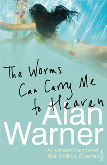

The Worms Can Carry Me To Heaven

THE WORMS CAN CARRY ME TO HEAVEN (2006)
Manolo Follano is handsome, fastidious, opinionated, more than a little vain and has built a comfortable provincial life for himself. Despite his inability to master the English language, his architectural design company on the mediterranean coast is thriving, his suits are handsome and his luxury appartment complete. So when his doctor and best friend tells 'Lolo' he is dangerously ill it is, it would seem, the end of everything.
PRAISE FOR THE WORMS CAN CARRY ME TO HEAVEN
- In 2003 Alan Warner was one of Granta's 20 Best Young British Novelists, and quite right too - he's a writer of stunning originality (The Times)
- The Worms Can Carry Me to Heaven is one man's story, funny, moving, swollen with lust and high anxities, sombre in moments, momentously memorable in passages of lyrical intensity, where it sings with a potent underlying sadness (Scotsman)
- Funny, profound, shocking and provocative (Esquire)
- An extraordinary novel... contains beautiful writing...[and] moments of superb deadpan comedy (Guardian)
- A triumph of blackly comic modern gothic... Warner's a brilliant writer and his wild imagination is captured in prose of demented lyricism (Spectator)
- A savage, surreal and very original imagination (Sunday Telegraph)